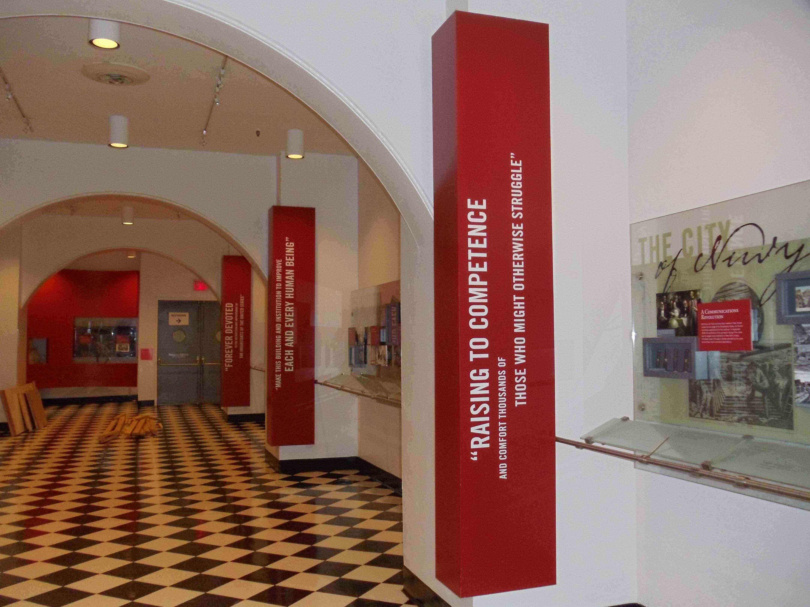
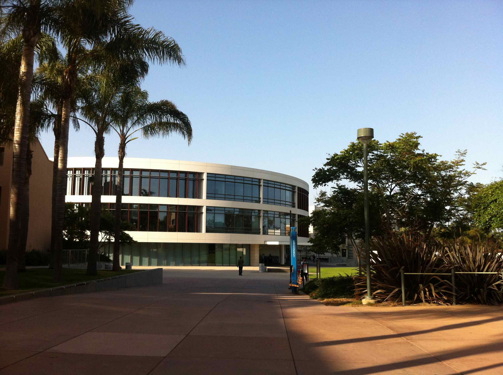
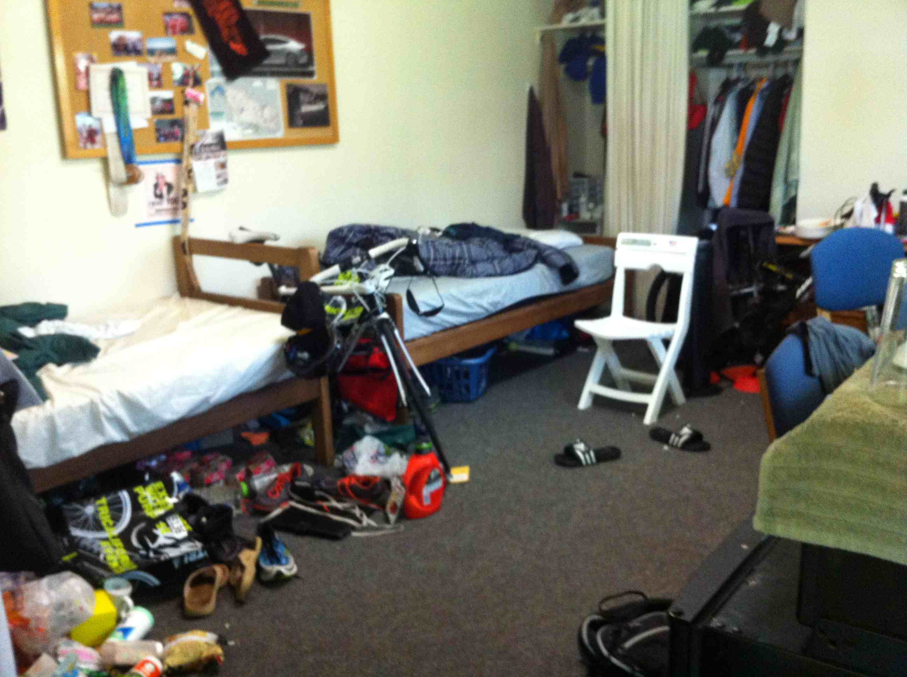

© Laurie Kiguchi
The Cooper Union for the Advancement of Science and Art
How Laurie can help
9 Key Ways Independent Educational Consultants Support Students and Families
Laurie Kiguchi, college and career advisor at LK Educational Consulting in Santa Cruz, CA, offers a range of services to help students through the entire college planning process, and with career planning for high school students, college students, college graduates, and adults. Her approach is to provide guidance throughout the process, from freshman to senior year and beyond, at a level tailored to the needs of each student and family. Because she wants to encourage and honor the student's engagement in the process as well as accommodate family abilities and constraints, Laurie does not package her services but allows each family to choose the level of assistance they need.
College preparation and planning
- Academic preparation - evaluating and planning the high school curriculum in the context of student strengths, interests, and career goals
- Recommending possible college, university, or online courses
- College admission testing - what, when, and how to prepare
- Understanding one's self and dreams for the future
- Identifying possible majors or areas of interest
- Exploring and preparing for careers
- Academic enrichment opportunities - during the school year and summer
- Extracurricular activities - for fun, for exploring, for growing as a person
- Playing sports in college - DI, DII, DIII, NAIA, club, intramurals
- Working with college coaches - being recruited and admitted
- Developing college preferences - becoming aware of what's offered and what makes a good fit
- Learning how to pay for college - need-based aid, merit scholarships

© Laurie Kiguchi
Loyola Marymount University
The college list - applying, choosing, and transitioning
- Building a college list - recommending colleges to explore, ways to explore them, and assessing fit
- Application planning and strategy - balancing the workload to reduce stress
- Portraying the student in the application and enhancing chances of admission
- Writing application essays and personal statements
- Obtaining meaningful letters of recommendation
- Preparing admissions resumes
- Following up after the application is submitted - interviews, communicating with admissions representatives
- Preparing for admission interviews
- Choosing among college offers!
- Evaluating financial aid offers
- Transitioning from high school to college - for the student and the parent
- Factors influencing college success
© Laurie Kiguchi
California Institute of the Arts
Laurie wants to help you as much as you need
Through the process
Each stage of the college planning process carries different priorities. Laurie recognizes that each student's situation is different, and she offers customized guidance while also providing an overview of the process. While academic preparation is first and foremost, extracurricular and career exploration activities are also important. By far the most critical theme, however, is the student developing self-understanding and building critical life skills in the personal, social, and "real life" realms. For success in college, developing grit, a positive mindset, effective behaviors, and a strong support system is key.
Laurie guides students through the process, helping them to learn what's needed, do what's needed, and follow through with what's needed to apply. Whether a student applies only to California State Universities or to an array of private and public institutions with many required essays, letters of recommendation, coach outreach, supplemental talent submissions, and merit scholarship opportunities, an experienced and organized advisor can help.
Transition
Transitioning to college can bring both excitement and uncertainty. Laurie can guide both students and parents at this stage, allaying concerns and laying groundwork for success in college and in life.

© Laurie Kiguchi
Cal Poly San Luis Obispo
Career planning
Planning for a career, whether as a high school student, college student, or no-longer-a-student, can range from exciting to nerve-racking. Understanding one's values, interests, personality, temperament, and practical requirements is important to finding a path to a happy and fulfilling career. Laurie works with clients to understand themselves and to identify career possibilities, explore careers, and to develop a path to prepare for a career.
Future possibilities
Laurie's approach is to make the process effective and productive
as well as fun and enjoyable for all (parents included!).
While it does require work, it's work toward a future of possibilities and opportunities!
The only way to do great work is to love what you do.
If you haven’t found it yet, keep looking. Don’t settle. – Steve Jobs